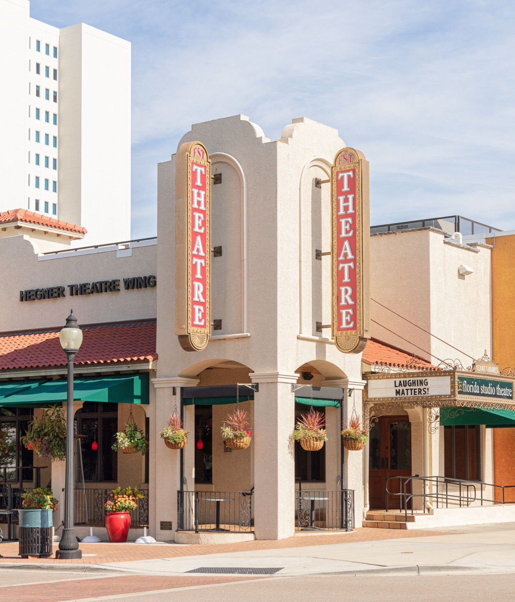

01
West of Trail
West of U.S. 41, along Sarasota Bay
One of Sarasota's most desirable residential areas, featuring historic homes, luxury estates, waterfront properties, and exceptional proximity to downtown and Sarasota Bay.
Bayfront towers, tree-lined streets west of the Trail, and the neighborhoods in between.
From the U.S. Census Bureau, the City of Sarasota and Visit Sarasota.
Living in Sarasota
Downtown Sarasota faces Sarasota Bay, and John Ringling Boulevard carries on from it across the water to St. Armands Circle and Lido Key. The city's story starts in December 1885, when Scottish colonists arrived at the newly platted Sara Sota. The town incorporated in 1902, and from 1927 to 1959 the Ringling circus made its winter quarters here, which is why an art museum, a circus museum and a Venetian-style mansion on the bay all carry the Ringling name.
Within a short drive you can choose very different ways to live: condominium towers and walkable blocks downtown, older streets and bayfront homes west of U.S. 41, the shops along Osprey Avenue in Southside Village, and, just past the city line, the established neighborhoods of Gulf Gate.

“Every part of Sarasota comes with its own questions. Near the bay it might be the flood zone and the seawall; in an older house, the roof; downtown, the condominium association's rules and budget. I bring them up early, while there is still time to shape your offer.”
Christina Jenkins · Dalton Wade Real Estate Group
What sets it apart
The State Art Museum of Florida, part of Florida State University: the Museum of Art, Ca' d'Zan, the Circus Museum and the Bayfront Gardens. ringling.org
Bayfront Park beside Marina Jack, and The Bay, the city's first signature waterfront park, where the Boulevard of the Arts meets the water.
The Sarasota Opera House in a theater built in 1926, Florida Studio Theatre, and the Van Wezel, the purple seashell of a hall on the Tamiami Trail.
The Sarasota Farmers Market fills Main Street at Lemon Avenue every Saturday, rain or shine. sarasotafarmersmarket.org
In 1952 the historian Henry-Russell Hitchcock singled out a group of young Sarasota architects; their work became known as the Sarasota School of Architecture.
Neighborhoods
West of the Trail, Southside Village, downtown and Gulf Gate, in Christina's words.
01
West of U.S. 41, along Sarasota Bay
One of Sarasota's most desirable residential areas, featuring historic homes, luxury estates, waterfront properties, and exceptional proximity to downtown and Sarasota Bay.

02
Osprey Avenue and Hillview Street
A highly sought-after Sarasota neighborhood featuring historic charm, beautiful homes, boutique shopping, popular restaurants, and a walkable lifestyle near downtown.

03
Main Street to the bayfront
A vibrant urban destination featuring luxury condominiums, waterfront residences, cultural attractions, fine dining, and a walkable arts and entertainment scene.

04
Gulf Gate Drive, unincorporated Sarasota County
An established Sarasota neighborhood known for its charming homes, mature landscaping, and convenient location near Siesta Key Beach, Sarasota Square, local restaurants, and shopping.
On the water
The bayfront, the boats and the causeway out to the keys.

Marina Jack
Marina Jack began as Marina Mar, a marina the city approved on the bayfront pier in 1963. Island Park was filled in just south of the pier a year later, and the two still anchor the waterfront downtown.
01 / 04
Homes for sale

01

02

03

04
Listing information is provided in part by Stellar MLS through IDX Broker.
Around Sarasota
Sarasota County School District
District WebsitePublic schools inside the city limits
School assignment depends on the address. Confirm the school for any home with the Sarasota County School District.
From the Blog

Flood zones
How to look up a home's zone and elevation, and when to ask for an elevation certificate.

Inspections
What the inspector looks at, and why insurers care about the roof's age as much as its condition.

Condominiums
The budget, the reserves, the rules on rentals and pets, and the questions to ask before you write an offer.
Questions

No. Gulf Gate is an unincorporated community that Sarasota County governs, though its addresses carry a Sarasota mailing city. For a home there, county rules apply, not the city's.
There is no official boundary. “The Trail” is U.S. 41, the Tamiami Trail, and locals use West of Trail for the neighborhoods between it and Sarasota Bay, among them Indian Beach-Sapphire Shores, Harbor Acres and Cherokee Park.
John Ringling Boulevard crosses the bay to St. Armands Circle and Lido Key, and the free Bay Runner trolley makes the same run seven days a week. Visit Sarasota also lists a free trolley from downtown to Siesta Key.
Public schools in the city are run by the Sarasota County School District. Assignment depends on the address, so confirm the school for any home with the district before you rely on it.
Sarasota Bradenton International Airport (SRQ) sits on the Manatee and Sarasota county line, about four miles north of downtown.
Yes. The zone and the elevation of the house both shape what insurance will cost, and they are easier to weigh before you are under contract. Sarasota Flood Zones explains how to look both up.
Nearby communities
Talk to Christina
Tell Christina which part of the city you have in mind, from a downtown condo to a house west of the Trail. She will come back with the neighborhoods worth a look, the homes in them, and what she would check first.